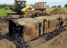
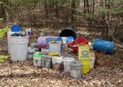

I responded to and managed the clean up of a huge gasoline spill. A tanker semi trunk was traveling on a rural highway in South West Marquette County Michigan. The driver had to pee in the middle of the night and pulled over onto a very soft shoulder. As the driver was relieving himself, the rig rolled over rupturing the tank spilling about 9,000 gallons of gasoline.

Industrial Waste Clean Up
This clean up job was interesting and rewarding to restore the shoreline. This pollution is from old wood chemical distallation plant along the shoreline of Lake Superior in Marquette Michigan. The plant was burying sludge tar about 200 yards from the lake shore from the late 1920s to the mid 1960s. The waste was discovered about 50 years later by lake swimmers smelling the chemicals that were seeping into the water. I started this clean up in 2011. All the waste was removed and there are nice beach front properties along this pristine shoreline.
The arial photo on the right is from the 1950s showing the plant in operation. The very dark black rectangle in the middle is a tar sludge pond. Notice the dark plume in the water off the beach.
Shady Business
These abandoned waste oil and sludge drums are the result of a shady business that was once a metallurgical processing facility that operated for about 20 years before going bankrupt. The owner was claiming to offer waste oil recycling to local businesses. However, he was charging the businesses fees to recycle thier oil waste and not recycling it. He was just filling drums and discarding them while making a big profit.

Disrespectful Locals
Not my biggest clean up job, however still significant. This was a about a flatbed truck worth of old paints and sealants that was dumped a few hundred feet in the woods. This highlights that there are many people will go to great lengths to dispose of wastes believing that it is easier than proper disposal. I always coordinate with local law enforcement to track down these people. Unfortunately, this investigation only revealed that this was probably a local dumping their waste in the woods and was not associated with a business. They carefully did not spill anything knowing that someone would clean it up.